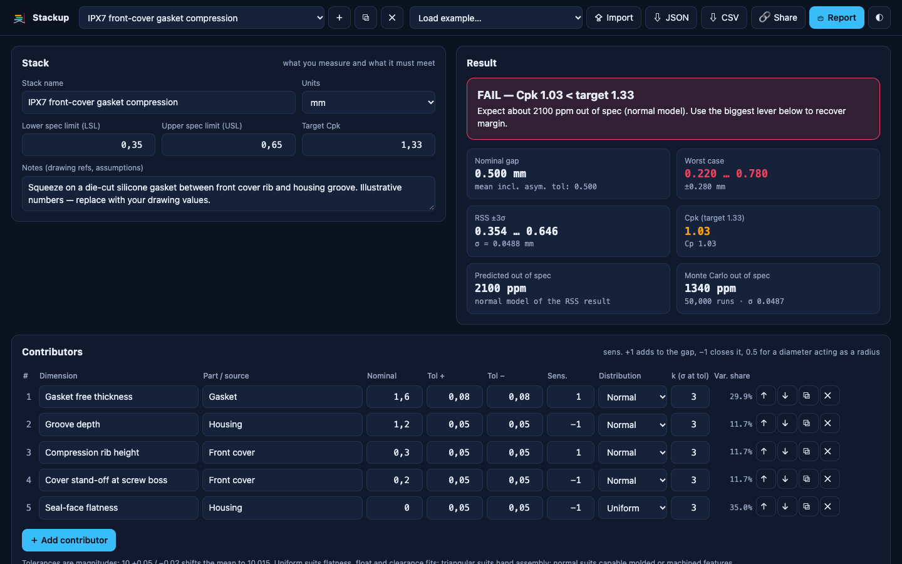

Worst case, RSS and Monte Carlo in one screen — with Cpk, predicted ppm and the one dimension you should tighten first. Free, offline, no sign-up. Built by a mechanical DVT engineer for gaskets, snap-fits, PCB clearances and every gap in between.

Worst case, RSS (±3σ) and a seeded Monte Carlo up to 200,000 runs — side by side, with a clear PASS / statistical PASS / FAIL verdict.
Predicted Cp, Cpk and out-of-spec ppm against your LSL / USL and target Cpk. One-sided specs work too.
A variance Pareto shows who owns the variation, and a what-if tells you the new Cpk if you halve that tolerance — or re-centre the nominal.
Normal with your own k (σ at tolerance), uniform for flatness and float, triangular for hand assembly. Asymmetric tolerances shift the mean correctly.
A vector loop draws itself as you type, so reviewers see which dimensions open and close the gap.
One-page PDF report for design reviews, CSV for Excel / Sheets, JSON backup and a link that carries the whole stack.
Monte Carlo samples each contributor from its own distribution, so it reports the true tails when inputs are not normal (uniform flatness, for example, gives lighter tails than the normal estimate).
No. Stackup is a static page; stacks are saved in your browser's local storage. Share links carry the stack inside the URL itself.
Yes — upload the .xlsx to Google Drive and open it with Google Sheets. All formulas use functions both Excel and Sheets support.
No. Stackup handles 1D (linear) stacks with sensitivities — the 80% of everyday checks. 3D GD&T variation analysis still needs a dedicated tool.
The math is checked against an independent SciPy reference and the workbook against an independent formula engine. It is still an engineering aid: review your loop, inputs and assumptions like any calculation.